Live dashboards and intelligent automation, built on the systems you already use. Stop waiting for month-end reports, and free your team from work a system should be doing.
On the live page this goes to the thank-you page. In this prototype nothing was sent.
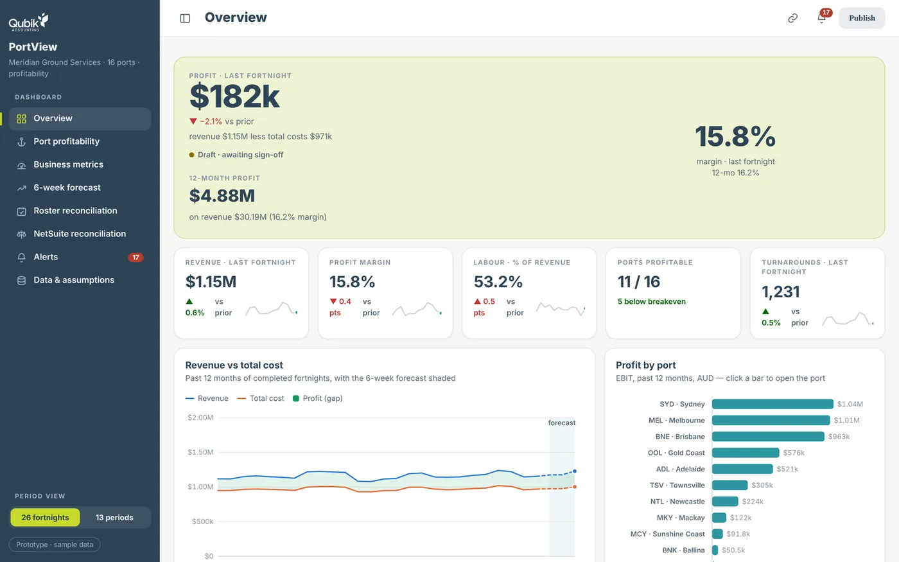
A Qubik profitability dashboard · sample data · fictional names
In most growing businesses, skilled, well-paid people spend hours every week collecting, copying and checking numbers so that someone else can make a decision. That time adds up, and so do the headaches that come with it.
Put in your own numbers. Nothing is sent anywhere.
a year on manual work, 1,380 hours (about 0.8 of a full-time role)
Every 10% of that work handed to a system is worth A$7,590 a year, and gives your people that time back.
Based on 46 working weeks a year and a 38-hour week. An estimate to start the conversation, not a quote.
We bring your financial, sales, operational and staffing information together into dashboards built around the numbers that matter to you, and keep them up to date automatically.
Profit and margin for the latest period and the last 12 months, revenue against cost, and profit by site, all on the page leaders open first.
One click from the big picture to a single site: its KPIs, cost stack, profit by period and a full P&L for every period.
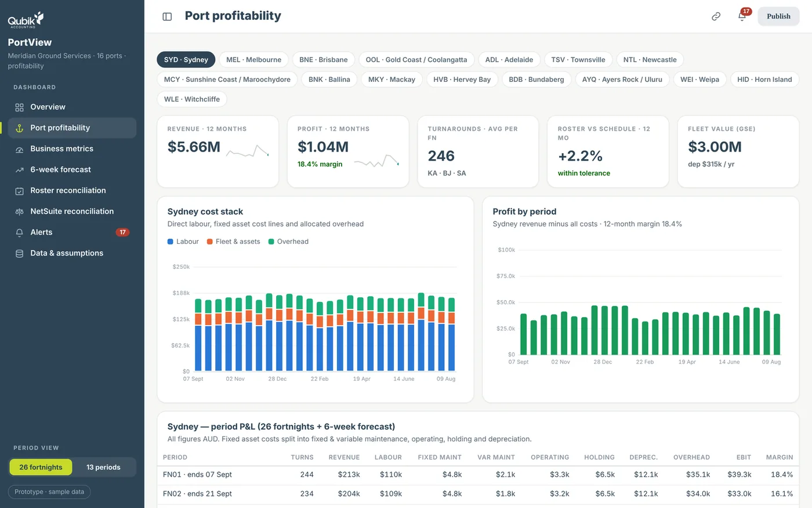
Every site across every period, coloured by margin. Problems that hide inside a total stand out at a glance.
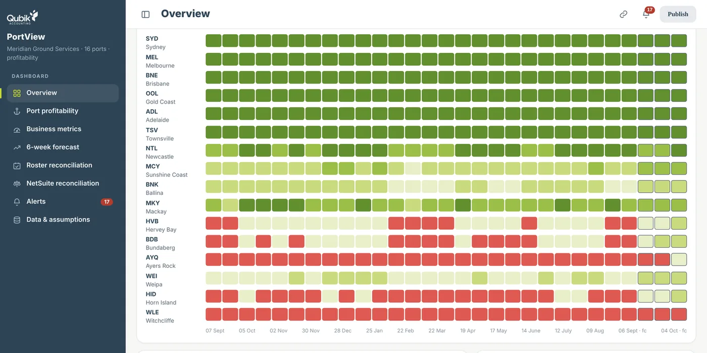
A rolling forecast built from work that's already booked, so you can see the next six weeks of revenue, labour and profit, not just last month's.
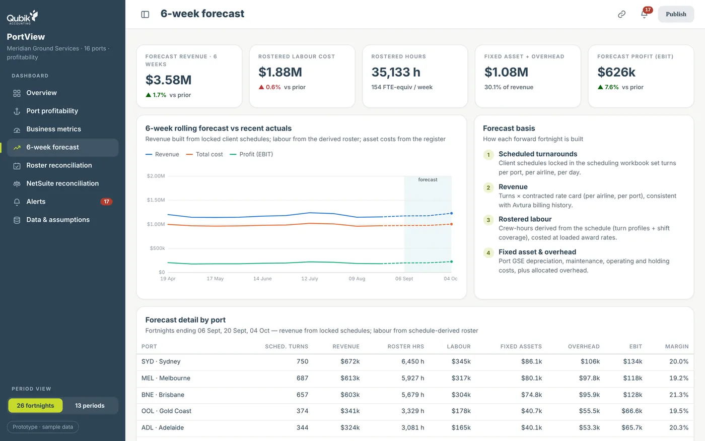
Margin breaches, staffing variances and out-of-date data are flagged automatically, against thresholds you set and can change.
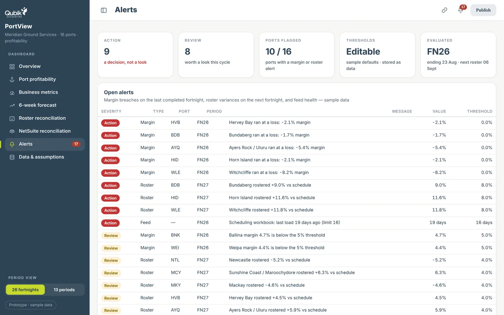
Dashboard figures are tied back to the closed results in your accounting system every month, with any difference explained. Built by accountants, checked like accountants.
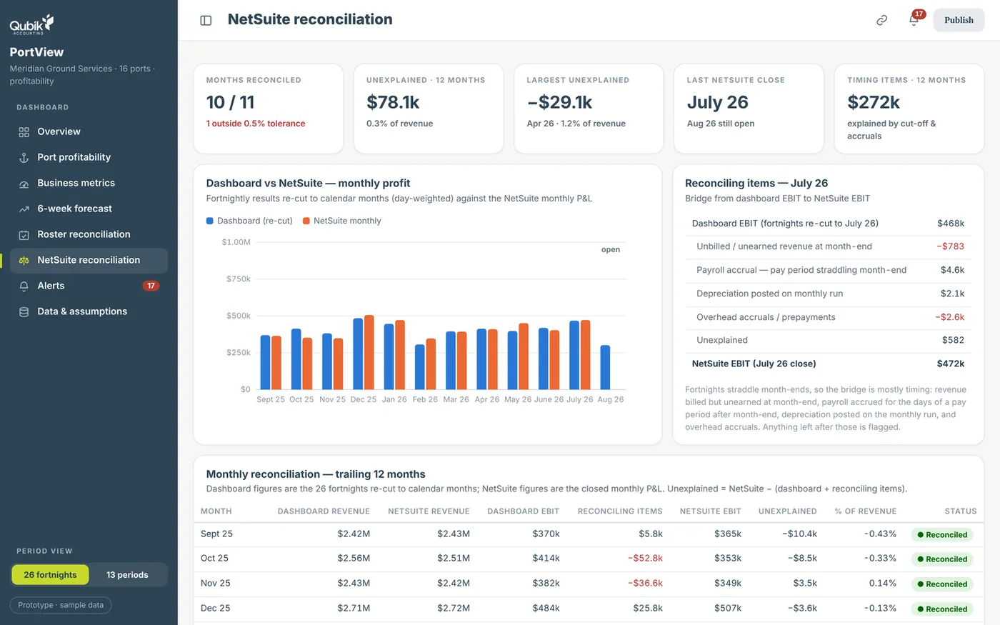
Real screens from a working Qubik dashboard · sample data · fictional names
Your key financial and operational data in one place, across sites, divisions and businesses.
See margin by customer, product, project or site, and find where it's leaking.
Data collection, reporting and routine follow-ups run themselves.
Up-to-date figures against budget and target, instead of last month's spreadsheet.
Clear sight of receivables, payments and the weeks ahead.
Grow revenue without growing admin headcount at the same rate.
Seeing a problem is only half the job. We connect your dashboards to AI and automation, so the follow-through happens too.
Your people stay in control: anything the system isn't sure about goes to a person to decide.
We connect to the software you already run and bring it together around your business rules. Nothing about how your team works in those systems has to change.
The same dashboard speaks your language: depots and loads, venues and covers, clinics and appointments. Pick your industry to see it.
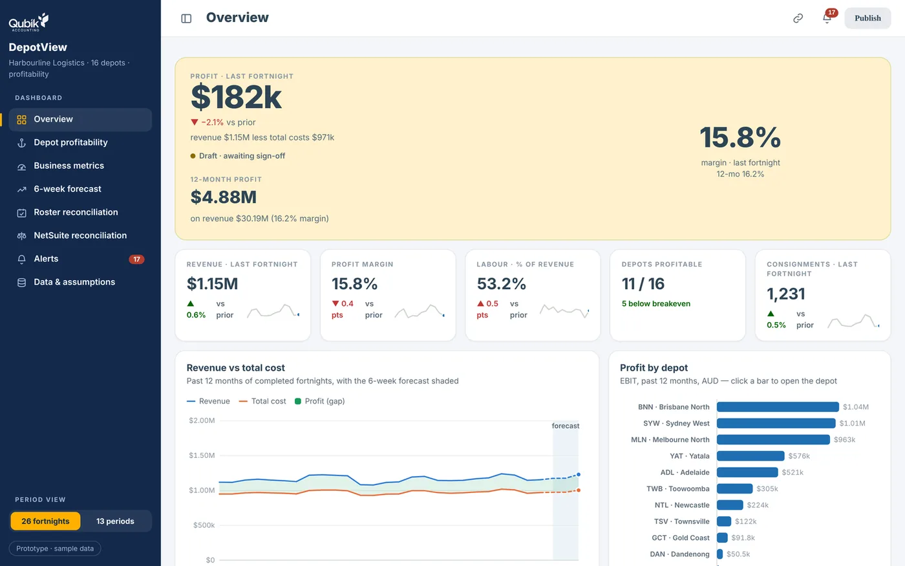
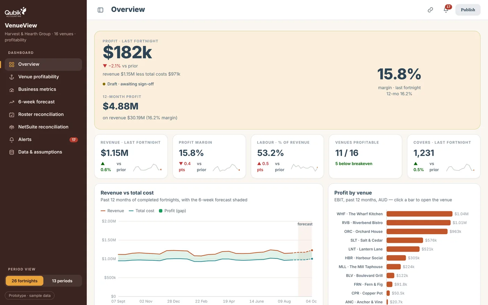
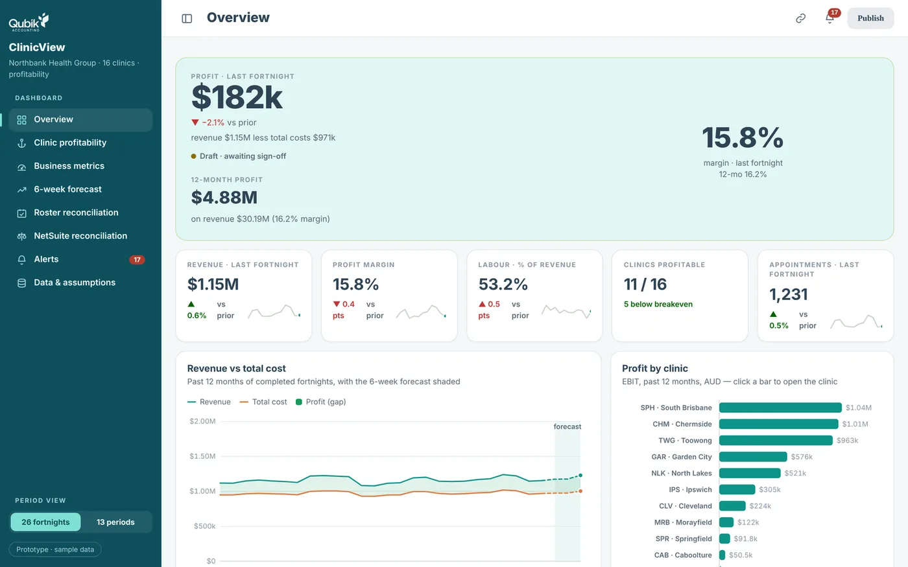
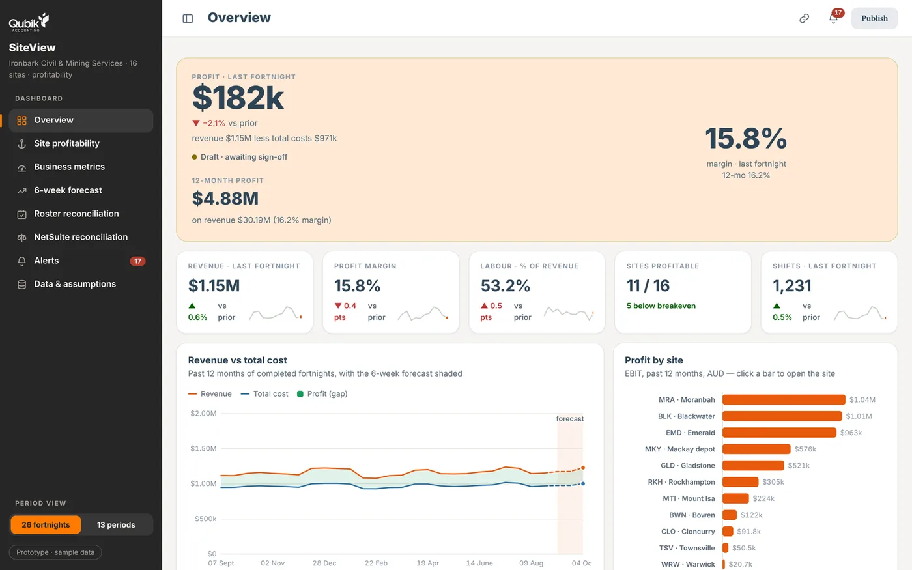
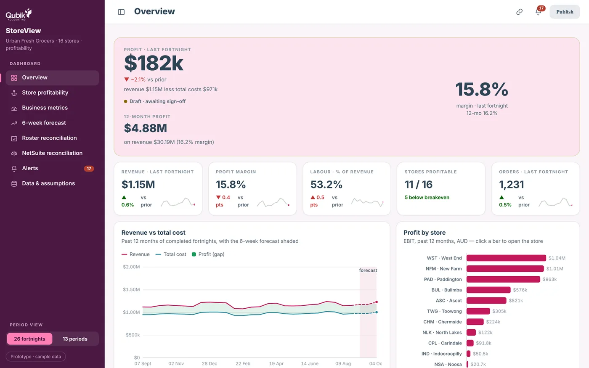
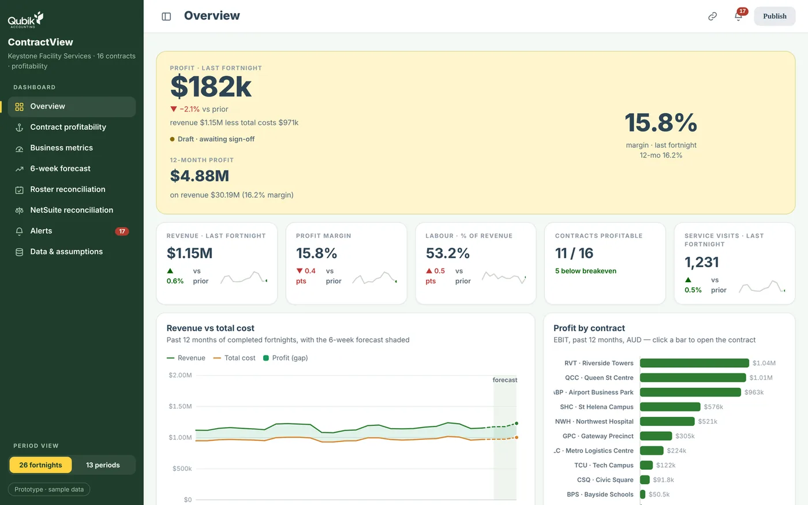
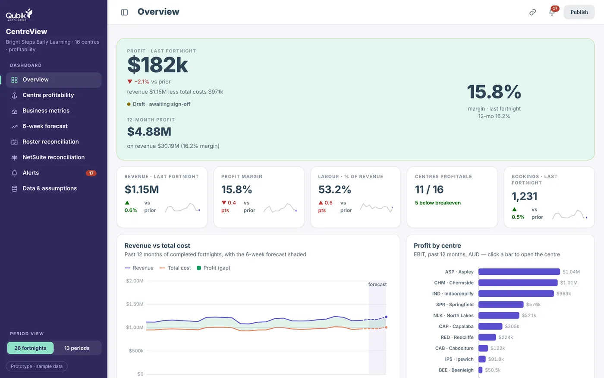
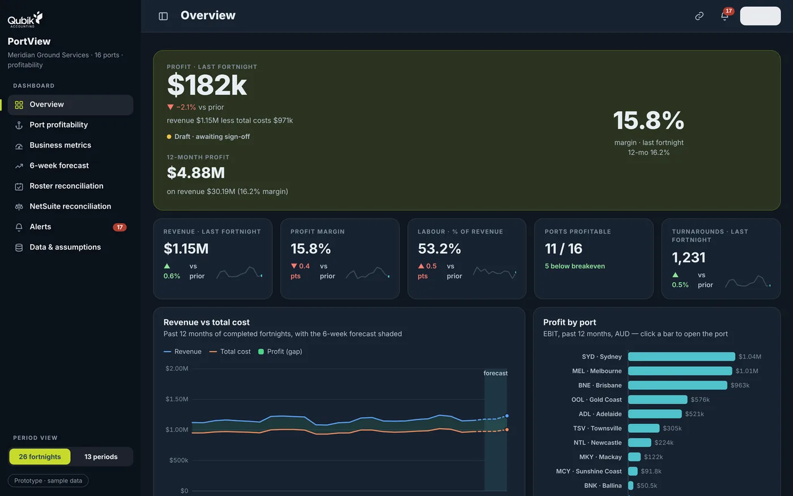
Sample data · fictional names. Don't see your industry? The same approach works for any business with sites, teams, customers or projects.
You don't need a data team or a big IT budget. Most of our conversations start with one of these.
Most dashboard and automation firms start with the technology. We start with your numbers: how your business makes money, where margin leaks, and what's worth fixing first.
Dominic Guinea, founder and CEO, Qubik"Having spent years helping business owners navigate challenges and unlock opportunities, I believe we are entering an extraordinary new era where AI and automation will fundamentally redefine what businesses can achieve.
My vision is to empower ambitious, growing businesses with the intelligence, efficiency and capabilities to compete at the highest level — transforming information into insights, repetitive work into automation, and untapped human potential into extraordinary results."
"Qubik isn't just an accounting firm, it's really more like a partner in your business. I think their added value is something that doesn't exist in other accounting firms."Adiel Ben Karmona, owner and head chef, Pilpel
"Dom has saved us more money than we've spent!"Mike Wikes, Man Group
We learn how your business runs, where the time goes and what you can't see today.
We map your systems and build a working prototype of your dashboard, so you can see it and shape it before deciding on the build.
We connect your systems and build to the agreed design, checked against your current reports before go-live.
We keep it running as your business changes, and add new dashboards and automation when you're ready.
Thirty minutes with business experts who understand both the numbers and the technology. The biggest opportunities usually sit where business efficiency and technology efficiency meet, and that's where we look.
Book my free callEvery business is different, so we don't sell packages. We agree the design with you first, then price the build against it, so the price you sign reflects exactly what you approved.
We map your systems and requirements and give you a working prototype to shape. No obligation to go further: you keep the requirements and findings.
Priced once the design is agreed, as a fixed project price, staged in phases, or spread as a monthly fee.
Keeps your dashboards, data feeds and automation running and up to date as your business changes.
You'll always know the price before any work starts.
Yes. Dashboards and automation are for businesses that want clearer numbers and less manual work, not for tech companies. You don't need technical staff: we build it, explain it in plain English and support it.
We can normally work with any software you have: accounting, payroll, rostering, CRM, operational systems and spreadsheets. We'll check your setup on the call.
No. We connect to your systems with read-only access, and your team keeps working in them exactly as they do now.
We're fast, and we move as quickly as your team can handle. You'll see a working prototype early in scoping, which typically takes two to three weeks, and the build moves at the pace your people can test and adopt it. You'll have a timeline before you commit to anything.
A relaxed 30-minute conversation by phone or video with business experts, not salespeople. We look for both business efficiencies and technology efficiencies; where the two meet is usually the richest source of opportunities. You'll leave with an honest view of what's worth doing.
We only use read-only access to the data the dashboards need. Dashboards sit behind secure sign-in, and access can be limited so each person sees only what they should, for example a manager seeing only their own site.
Where it genuinely helps: highlighting unusual trends and exceptions, answering questions about your data in everyday language where supported, and reading documents so nobody has to re-key them. Your people stay in control of decisions.
No. Dashboards update themselves, alerts arrive on their own, and with ongoing support we monitor everything and fix issues as your systems change.
It depends on your systems and what you want to see, so we don't publish packages. See how pricing works above; you'll always know the price before any work starts.
You don't need another spreadsheet. You need a clearer view of your business and a smarter way to run it.